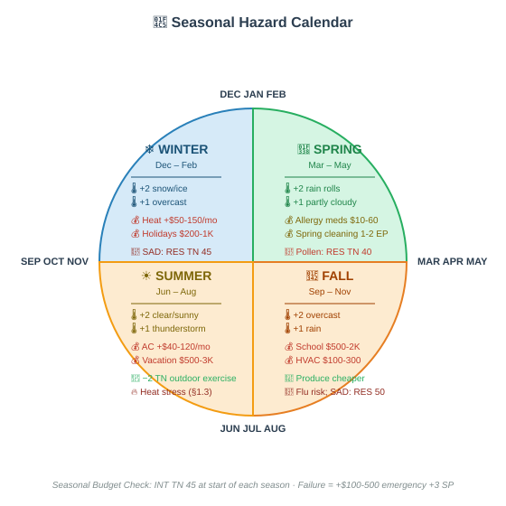
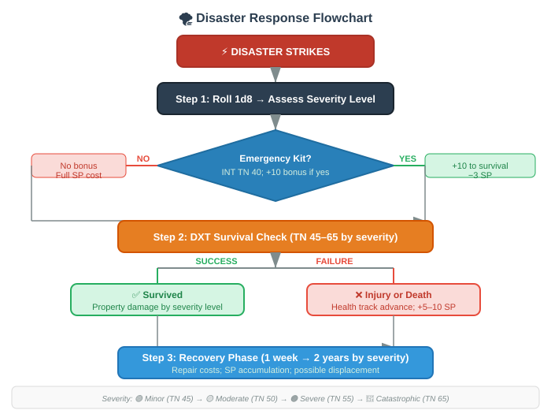
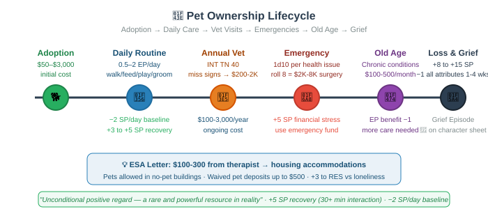
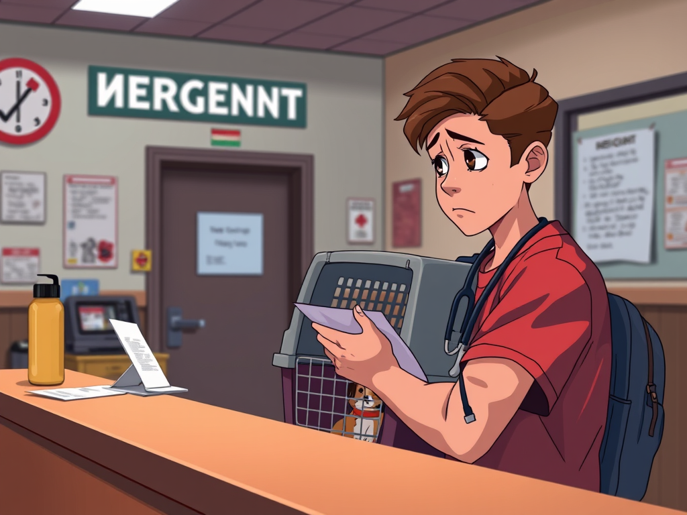
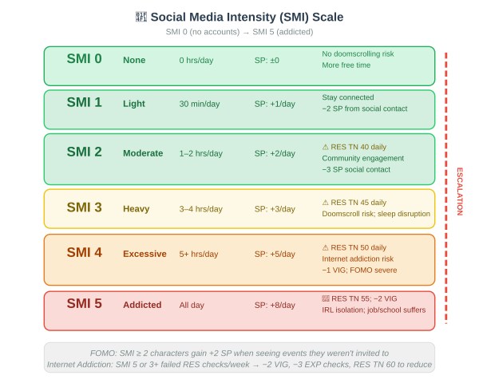
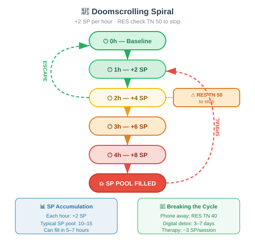
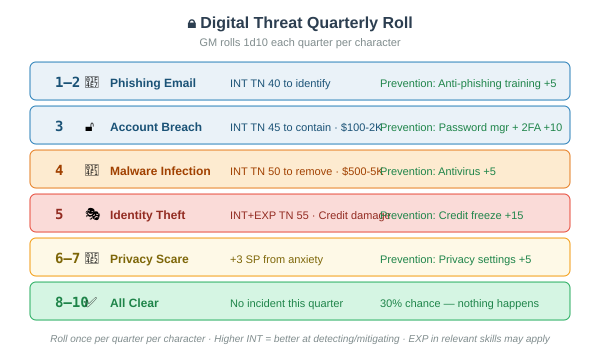
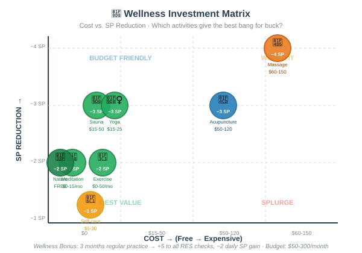
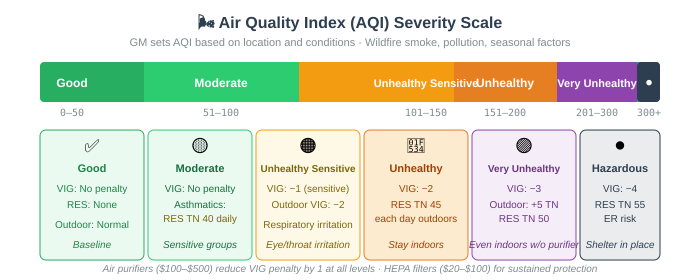

Climate, pets, technology, wellness, and the invisible forces shaping every character's day.
The world around a character is never neutral. Weather dictates commutes, seasons shift budgets, pets demand care, screens command attention, and air quality affects health. This page covers the environmental systems that run in the background of every session — the ever-present context of modern life.
Use the Daily Weather Table at the start of each game day. Even if the weather doesn't directly impact the scene, note it — characters should feel the world changing around them. A character who hasn't noticed it's been raining for three days is either very isolated or very distracted.
Weather is rolled daily by the GM using the Daily Weather Table. It modifies checks, costs, and mood for the entire day. Characters in different climates have different base weather patterns (see §2).
Roll 2d10 and cross-reference with the season for the weather type:
Each weather type imposes mechanical modifiers on relevant activities:
Outdoor Tasks: No modifier
Commuting: No modifier
Mood / SP: −1 SP (good weather lifts mood)
Special: UV exposure — sunburn risk if outdoors 4+ hrs without SPF (RES check TN 35 each 4 hrs)
Outdoor Tasks: No modifier
Commuting: No modifier
Mood / SP: No effect
Special: Baseline conditions
Outdoor Tasks: +3 TN
Commuting: +2 TN
Mood / SP: +1 SP (gloominess)
Special: Less UV risk; better for light-sensitive characters
Outdoor Tasks: +5 TN on all outdoor tasks
Commuting: +5 TN on commuting checks; +20 min travel time
Mood / SP: +2 SP
Special: Indoor activities preferred; outdoor events may cancel; wet clothes cost EP to manage
Outdoor Tasks: +8 TN; dangerous outdoors
Commuting: +8 TN; possible delays
Mood / SP: +3 SP
Special: Power outage risk (1d10: 8+ = outage lasting 1–6 hours); outdoor activities canceled
Outdoor Tasks: +10 TN on all outdoor tasks
Commuting: +10 TN; DXT check (TN 55) to avoid accident; failure = minor accident (fender-bender, slip/fall)
Mood / SP: +3 SP
Special: Shoveling required (2–4 EP); salt/ice treatment costs $20–$60/month in winter
When the daily weather roll is a natural 20, roll on the Extreme Weather Table:
It's a Tuesday in March. The GM rolls weather: 2d10 = 16 — 🌧️ Rain. A character needs to walk to the bus stop and transfer to work. Their commute check normally has TN 40, but rain adds +5 TN → TN 45. They roll 42 — failure. They arrive 15 minutes late, soaked, and gain +2 SP. Their employer's tardy policy means a verbal warning if this happens 3 times in a month.
Seasons shift the entire cost and mood landscape. Each season has a Seasonal Modifier that applies to all characters in that region for 3 months.

Weather Bias: +2 to snow/ice rolls; +1 to overcast
Cost Effects: Heating +$50–$150/month; snow equipment $50–$200; holidays $200–$1,000
Health: SAD risk — RES check (TN 45) monthly; failure = +3 SP/day, −1 VIG; flu/cold risk +5 TN on health checks
Weather Bias: +2 to rain rolls; +1 to partly cloudy
Cost Effects: Allergy meds $10–$60/month; spring cleaning (1–2 EP)
Health: Pollen — RES check (TN 40) daily; failure = −1 to all checks; spring mood boost: −1 SP/week for non-allergic
Weather Bias: +2 to clear/sunny rolls; +1 to thunderstorm
Cost Effects: AC +$40–$120/month; vacation $500–$3,000; outdoor gear
Health: Outdoor activities available (−2 TN outdoor exercise); heat stress (see §1.3); school's out (+ $100–$300/month childcare)
Weather Bias: +2 to overcast; +1 to rain
Cost Effects: Back-to-school $500–$2,000; HVAC maintenance $100–$300; holiday prep begins
Health: Harvest season (produce cheaper); transitional weather = cold/flu risk; mild SAD onset: RES check (TN 50)
At the start of each season, characters make a INT check (TN 45) to budget for seasonal expenses. On failure, they are underprepared: +$100–$500 in emergency spending and +3 SP from financial stress. Characters who track their budget carefully (high INT or EXP in "Personal Finance") may skip this check.
Natural disasters are rare but catastrophic events. The GM may introduce one at any time as a major plot event. Roll 1d8 on the appropriate table for the region.

Characters who maintain an emergency kit (water, food, first aid, flashlights, batteries, documents) gain a +10 bonus to all disaster survival checks and reduce disaster SP by 3. Building an emergency kit costs $100–$500 upfront and requires a INT check (TN 40) to assemble properly.
Pets are family. They provide emotional support, demand daily care, and cost money. Pet ownership is a Life Aspect that runs parallel to all other character systems.

Initial Cost: $500–$3,000
Annual Cost: $1,000–$3,000
Daily EP: 2 (walking, feeding, training, play)
Emotional Bonus: +5 SP recovery when interacting; +3 to PRC (social confidence from routine)
Initial Cost: $100–$1,500
Annual Cost: $500–$1,500
Daily EP: 1 (feeding, litter box, play)
Emotional Bonus: +3 SP recovery when interacting; calming presence
Initial Cost: $50–$500
Annual Cost: $200–$600
Daily EP: 0.5 (feeding, cage cleaning)
Emotional Bonus: +2 SP recovery; singing/talking provides mood boost
Initial Cost: $50–$300
Annual Cost: $100–$300
Daily EP: 0.5 (feeding, tank maintenance weekly)
Emotional Bonus: +1 SP recovery; watching fish is meditative
Initial Cost: $100–$1,000
Annual Cost: $200–$800
Daily EP: 1 (feeding, habitat maintenance)
Emotional Bonus: +2 SP recovery; low-maintenance companionship
Initial Cost: $20–$200
Annual Cost: $150–$400
Daily EP: 0.5 (feeding, cage cleaning)
Emotional Bonus: +2 SP recovery; gentle interaction
Each day, pet owners must complete basic care tasks. Failure to do so results in pet distress and owner SP gain:
Check: None (routine)
Failure: Pet hunger; +2 SP guilt; emergency vet if prolonged
Check: VIG TN 30
Failure: Skip = +2 SP (guilt); dog may act out (destroy furniture, excessive barking)
Check: INT TN 40
Failure: Missed signs of illness; unexpected vet bill $200–$2,000
Check: DXT TN 35
Failure: Matting, skin issues, or unpleasant odor; grooming salon $50–$150
Check: PRC + EXP mod TN 45
Failure: Behavioral issues; professional trainer $100–$300/session
Check: None
Failure: Pet boredom; destructive behavior; +1 SP for owner
Characters with a pet receive ongoing emotional benefits:
A character with a diagnosed mental health condition can obtain an ESA letter from a therapist ($100–$300). This grants housing accommodations (pets allowed in no-pet buildings, waived pet deposits up to $500). The letter must be renewed annually. Landlords can still require the animal not cause damage or disturbance.
Pet emergencies are a major financial stressor. Roll 1d10 when a pet has a health issue:
When a pet dies, the character experiences grief proportional to their bond:

Sam adopted Luna 3 years ago. Every morning, Sam spends 2 EP walking Luna (30 min). Every evening, they play fetch in the park. Luna gives Sam +5 SP recovery each evening and −2 SP/day baseline. Sam's SP is consistently lower because of Luna.
One day, Luna eats something toxic. Emergency vet: 1d10 = 8. Emergency surgery costs $4,500. Sam has to use their emergency fund. Luna survives but needs 3 weeks of rest (+3 EP daily care during recovery). Sam gains +5 SP from the financial stress but −3 SP from Luna's recovery cuddles each day.
Years later, at age 14, Luna passes away peacefully. Sam gains +12 SP, goes on medical leave from work for 3 days, and spends a month at −1 to all attributes. The character sheet notes Luna in the "Relationships" section with a 🖤.
Technology is the invisible infrastructure of modern existence. It connects, distracts, empowers, and endangers — all simultaneously.
Social media use is tracked as daily screen time. Every character has a Social Media Intensity (SMI) from 0 (no accounts) to 5 (addicted):

When doomscrolling (consuming negative news/content), the character gains +2 SP per hour. After 2 hours of doomscrolling, they must make a RES check (TN 50) to stop. On failure, they continue for another hour (+2 more SP). This can create a doomscrolling spiral that rapidly fills the SP pool.

Characters with SMI ≥ 2 who see social events they weren't invited to gain +2 SP. Characters with SMI 0 gain no FOMO but may miss important community information.
Characters can install screen time tracking apps. Each day they see their total screen time. Exceeding a self-set limit costs +1 SP per hour over the limit. Setting and maintaining limits requires a RES check (TN 40) when tempted to exceed them.
Characters with SMI 5 or who fail their daily RES check 3+ times in a week develop Internet Addiction:
Digital life carries privacy risks. The GM rolls 1d10 quarterly for each character:

Effect: INT check (TN 40) to identify; failure = data compromised
Prevention: Anti-phishing training: +5 to check
Effect: Password stolen; INT check (TN 45) to contain; failure = $100–$2,000 damage
Prevention: Password manager + 2FA: +10 to check
Effect: Device compromised; INT check (TN 50) to remove; failure = data loss or ransomware ($500–$5,000)
Prevention: Antivirus software: +5 to check
Effect: Personal info stolen; INT + EXP check (TN 55) to resolve; failure = credit damage, months of cleanup
Prevention: Credit freeze: +15 to check
Effect: Data shared without consent; +3 SP from anxiety
Prevention: Privacy settings: +5 to resistance
Effect: No incident this quarter
Prevention: —
Online dating is a major social dynamic. Characters using dating apps follow these mechanics:
Each week of active app use, the character makes a PRC check (TN 45 − EXP in "Online Dating"). On success, they get a match. The match quality depends on the roll margin:
Match disappears after 1–3 conversations; +3 SP; character questions their worth
Match is not who they claim to be; +5 SP; emotional betrayal if attachment formed
Match sends just enough attention to keep hope alive but never commits; +2 SP/week
Endless swiping without real connections; +3 SP; character considers quitting
Date makes character uncomfortable; RES check (TN 45) to leave safely; failure = unsafe situation
Real chemistry; relationship building begins
Characters who work remotely have a different daily structure. Remote work has its own mechanics:
Commute: None (saves 1–2 hrs/day; −1 EP)
Setup: Desk, chair, internet ($200–$2,000 initial; $50–$200/mo)
Productivity: INT + EXP check (TN 45) daily; failure = distracted
Boundary: RES check (TN 40) daily to disconnect; failure = +3 SP, −1 VIG
Isolation: +2 SP/week; PRC TN 40 to maintain social connections
Savings: $50–$200/week
Commute: Full (1–2 EP; weather effects) or 2–3 days/week
Setup: Not needed (office) or needed for WFH days
Productivity: Structure provided (no daily check) or check only remote days
Boundary: Physical separation helps (no check) or check remote days
Social: Coworker interaction = −1 SP/day
Costs: Full commute costs or partial savings
Pat works from home. No commute saves 1.5 hours and 1 EP. But Pat's home office is on the couch (no proper setup). The GM calls for a INT check (TN 45) for productivity. Pat rolls 41 — failure. Distractions pile up: laundry, kitchen, phone. Pat works 2 hours less than planned and needs to catch up in the evening.
At 8 PM, Pat makes a RES check (TN 40) to disconnect from work. Pat rolls 37 — failure. They keep checking email, doomscrolling work Slack, and can't mentally clock off. +3 SP, −1 VIG for tomorrow. Pat invests in a standing desk and monitor ($400) the next week, gaining +5 to future productivity checks.
Self-care is distinct from leisure. Leisure is fun; self-care is intentional restoration. These activities have specific mechanical benefits that go beyond simple SP reduction.

Cost: $15–$50/visit
Time: 1–2 hours
Benefit: −3 SP, +1 VIG; deep muscle relaxation
Frequency: 1–2x/week recommended
Cost: $60–$150/session
Time: 1 hour
Benefit: −4 SP, +1 VIG; chronic pain reduced 1 level for 1–3 days
Frequency: Weekly (chronic pain); monthly (maintenance)
Cost: $50–$120/session
Time: 45 min
Benefit: −3 SP; chronic pain reduced 1 level for 3–7 days; +5 to pain rolls
Frequency: 2x/month recommended
Cost: $0–$15/month (app)
Time: 10–30 min
Benefit: −2 SP; +5 to RES checks for the day; builds EXP in "Mindfulness"
Frequency: Daily recommended
Cost: $15–$25/class; $30–$80/month
Time: 45–90 min
Benefit: −3 SP, +1 VIG; improves flexibility; builds EXP
Frequency: 3x/week recommended
Cost: $0–$50/month (gym)
Time: 30–60 min
Benefit: −2 SP; +1 VIG (temporary); builds EXP in "Fitness"
Frequency: 3–5x/week recommended
Cost: $5–$30 (products)
Time: 30–60 min
Benefit: −1 SP; small mood boost; costs 1 EP from budget
Frequency: Daily or as needed
Cost: $0
Time: 1–2 hours
Benefit: −2 SP; +1 VIG; "forest bathing" effect; free but weather-dependent
Frequency: Weekly recommended
Characters should budget $50–$300/month for wellness activities. Characters who invest in consistent self-care gain a Wellness Bonus after 3 months of regular practice: +5 to all RES checks and −2 to daily SP gain.
Don't let wellness become just another expense on a spreadsheet. Frame self-care as investment — characters who maintain their wellness spend less on crisis management (ER visits, therapy emergencies, burnout leave). Show the compound benefits of consistent self-care.
The physical environment affects health, mood, and daily function. These factors run in the background and can become acute issues.
The GM sets the AQI based on the location and current conditions. Wildfire smoke, pollution, and seasonal factors all contribute:

Long-term exposure to pollution (vehicle exhaust, industrial, lead paint in old buildings) has cumulative effects:
Allergens are a year-round concern for sensitive characters:
Season: Spring/summer
Effect: RES check (TN 40) daily; failure = −1 to all checks, sneezing, itchy eyes
Mitigation: Antihistamines ($5–$60/month); keep windows closed
Season: Fall/winter (indoor)
Effect: RES check (TN 45) in damp conditions; failure = respiratory issues, −1 VIG
Mitigation: Dehumidifier ($50–$200); mold remediation ($500–$5,000)
Season: Year-round
Effect: RES check (TN 40) around animals; failure = allergic reaction
Mitigation: Allergy shots ($500–$5,000/year); HEPA filters
Season: Year-round (indoor)
Effect: RES check (TN 35) in poorly maintained housing; failure = mild symptoms
Mitigation: Wash bedding weekly ($0); allergen-proof covers ($30–$80)
Season: Spring/summer
Effect: Celiac exposure → RES check (TN 45); failure = 24–48 hrs illness
Mitigation: Strict dietary adherence; label reading
Chronic noise exposure (traffic, construction, neighbors, airports) affects sleep, concentration, and stress:
Severity: Low–moderate
Effect: +1 SP/day if bedroom faces road; sleep quality −1
Mitigation: White noise machine ($20–$50); earplugs ($5–$20); soundproofing ($500–$3,000)
Severity: High (temporary)
Effect: +2 SP/day during active construction; −3 on INT checks requiring concentration
Mitigation: Work from library/cafe; noise-canceling headphones ($100–$350)
Severity: Variable
Effect: +1–3 SP/day; PRC check (TN 50) to resolve diplomatically
Mitigation: Landlord complaint; mediation; move ($500–$2,000)
Severity: Moderate
Effect: +2 SP/day; sleep disruption; property values lower
Mitigation: Soundproofing ($1,000–$5,000); move
Severity: Self-inflicted
Effect: Long-term hearing damage risk; 1d10 per year at high volume: 9–10 = −1 to auditory perception
Mitigation: Volume limits; regular hearing checkups
Wildfire smoke rolls into the city. The GM checks AQI: 250 (Very Unhealthy). Everyone indoors without air purifiers must make a RES check (TN 50) each day. Characters with asthma must make the check at TN 55.
Maria has asthma and no air purifier. Day 1: she rolls 48 — failure. −2 VIG, wheezing, +3 SP. Day 2: she rolls 42 — failure again. Her VIG drops another point. She uses her emergency fund to buy an air purifier ($200). Day 3: with the purifier running, her TN drops to 45. She rolls 51 — success. She can finally breathe.
Meanwhile, her neighbor Dave (no asthma, has a purifier) makes his TN 45 check and succeeds all three days. The environmental crisis hit them very differently.
Weather, environment, and quality-of-life factors are the background music of Reality RPG. They're always playing, even when they're not the focus. A character who hasn't thought about the weather in a week is either living in a climate-controlled bubble or has bigger problems. Use environmental factors to create texture, tension, and texture — the difference between a game session that feels like a spreadsheet and one that feels like life.